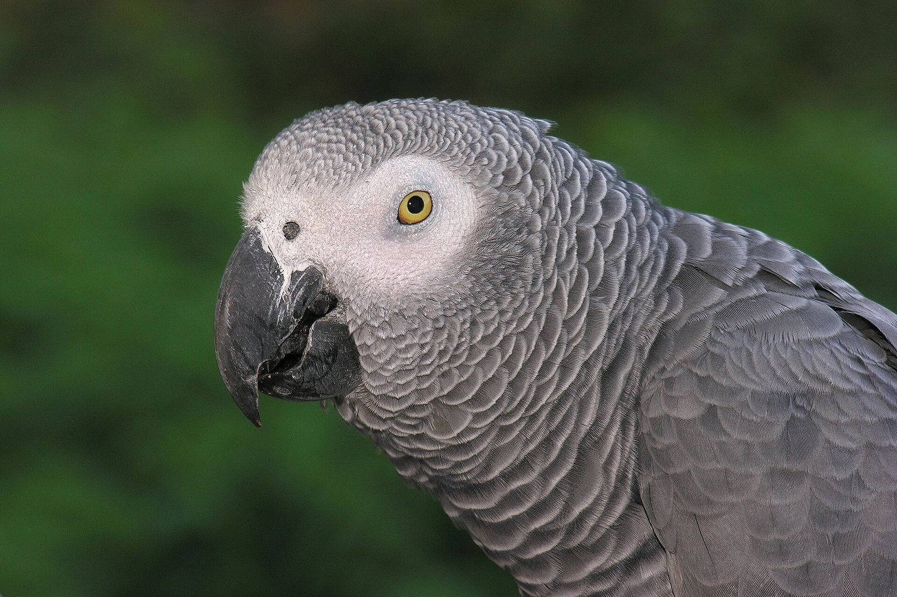

African Grey Parrot Hypocalcaemia: The Seizure That Starts in the Seed Bowl
The first sign is usually a bird that falls off its perch. By then the ionised calcium has been sliding for months, and the seed mix is the reason.

The African grey's resting blood calcium sits somewhere around 2.0-2.5 mmol/L when the diet is right, and a seed mix will not hold it there. That number is the whole story: below roughly 1.5-1.8 mmol/L the parathyroid gland can no longer compensate, the ionised fraction in the blood falls far enough to destabilise nerve membranes, and the bird goes into a seizure that looks nothing like the "fitting bird" people describe — it drops off the perch mid-sentence, wings clamped, feet clenched, and often recovers in ninety seconds to sit there as if nothing happened. In Psittacus erithacus, that drop is almost always built at the food bowl over months, not at the moment of the fit.
The evening I mistook a fit for a fright
Half past nine, a January, and a hand-reared male I'd kept for six years slid off his perch in the middle of a beak-grind. I heard the thump from the next room before I saw him. He was on the cage floor on his side, toes curled into fists, wings held tight and trembling, eyes half-shut. It lasted about seventy seconds. Then he stood up, shook out, climbed back and asked me for a nut.
I told myself he'd been startled. I had no business telling myself that. He was on a commercial parrot mix, a good one, plus whatever fruit I felt generous about, and he hadn't seen sunlight or a UV tube since I bought him. The vet took blood, found calcium low and phosphorus high, and the diet sheet he handed me came to about £200 in follow-up visits before he'd consider a maintenance plan. The seizure was cheap. The ignorance that caused it wasn't.
Seed mixes, calcium and the phosphorus trap
A seed-only or seed-dominant diet fails an African grey in two ways that compound. First, most seeds are poor calcium sources: well under 0.1 % calcium by dry weight, and much of what is there is bound to phytate — a storage form of phosphorus in the seed coat that grabs minerals in the gut before the bird can absorb them. Second, seeds are phosphorus-rich, so the ratio inverts. A good psittacine diet sits near 1.5:1 to 2:1 calcium to phosphorus; a sunflower-and-peanut mix can run nearer 1:4 or worse. That ratio is the number that matters far more than absolute calcium, because calcium absorption is competitive with phosphorus at the gut wall.
The second piece is vitamin D3. A parrot can't make it through feathers and there's no UV-transmitting skin on a bird's legs like there is on a reptile — the evidence for cutaneous synthesis in psittacines is thin, and what there is points to dietary D3 being the primary route. A bird fed seed with no D3 and no unfiltered outdoor light is running a system that cannot absorb the little calcium it does eat. This is nutritional secondary hyperparathyroidism, the same process that crumbles a reptile's bones: serum calcium drops, the parathyroid pumps out parathormone, and parathormone pulls calcium out of storage — the medullary bone in particular, and eventually cortical bone. In a laying hen that medullary bone is a deliberate buffer; in a parrot under chronic deficit it is being raided faster than it can be rebuilt. The skeleton pays first. The nervous system pays last, and by then you're looking at a bird on the floor.
When the bird is stabilised, the food is a formulated pellet as the base, roughly 40-60 % of intake by weight, softened slightly for a bird recovering from a seizure episode, and pushed alongside fresh vegetables and a small proportion of seed as a training treat only. Speak to the vet about a calcium-with-D3 top-dress for the first weeks, and never supplement calcium without agreeing the D3 with them — over-supplementing one without the other is its own problem.
UV, temperatures and building the enclosure for a bird that can't fly well
An African grey's thermal comfort zone is narrow enough to matter: 22-27 °C (72-80 °F) through most of the day, with a cool corner they can retreat to and a warm end they can use without panting. Sick or post-seizure birds cannot thermoregulate well, so a 28-30 °C (82-86 °F) warm zone for recovery is worth arranging. A bird on the floor of a cold room during a fit is losing heat at exactly the moment its metabolic system is compromised.
The lighting argument is messy in the hobby. There is no good evidence that a UV tube replaces dietary D3 in psittacines, and I don't use it as a substitute. What I do use is a properly-rated tube at the correct distance over the perch, because the consensus among exotic vets is that it does no harm and may help, and because the alternative — a bird that never sees full-spectrum light in a UK winter — is worse. A fluorescent tube rated for a bird enclosure should sit 20-30 cm above the highest perch, replaced every 9-12 months because the phosphor degrades long before the visible light does. I don't run one on a timer longer than a normal photoperiod (10-12 hours in winter, 12-14 in summer) because African greys respond to day length and I don't want to trigger breeding-season hormonal behaviour in a hen that shouldn't be laying.
The enclosure itself is where clumsy husbandry catches you out. A grey in the recovery phase — and a significant proportion of hypocalcaemic birds go through a period of weakness, poor grip and toe-curling after an episode — cannot perch reliably. I keep a low shelf at cage-floor level, covered in plain newspaper, and remove the high rope perches for two to three weeks post-seizure. Not because the perch is dangerous; because you don't want to find out at 3 a.m. that the bird lost its grip at the top of the cage.
Life stages, life events, and the calculators that change
The birds most at risk in the practice I've seen are not the adults on a long-term bad diet. They're the grey that's already compromised by a second demand on calcium.
| Stage or event | Calcium demand | Typical failure point |
|---|---|---|
| Juvenile hand-rear, 4-12 weeks | High — bone mineralisation | Formula too dilute, weaning on seed before pellets accepted |
| Subadult, 6-18 months, growth tapering | Falling but still elevated | Keepers drop pellets as the bird seems "grown"; ratio inverts |
| Adult, maintenance | Steady | Seed-dominant diet with no D3, no outdoor access |
| Laying hen, eggs per clutch | Steeply elevated — each egg takes calcium from bone reserves | Second or third clutch in a year; classic presentation |
| Post-seizure recovery | Rebuilding, plus D3 route under vet direction | Home diet not corrected, repeat episode in weeks |
The laying hen is the one I want to underline. Each egg a hen lays strips calcium from medullary bone, and an African grey hen that clutches twice in a year on a seed diet is running the most efficient hypocalcaemia factory in the aviculture room. If you have a hen and she's laying, the diet decision is not optional.
Two checks you can actually do at home
- Weigh weekly. A 450-550 g adult should not drift more than 3-5 % in a month without a reason. Sudden loss after a clutch or during a moult needs a vet, not a diet tweak.
- Read the pellet bag. Calcium and phosphorus both need to be listed, with a target ratio in the 1.5-2:1 band. If the bag only says "calcium" and no phosphorus, ask the manufacturer before you rely on it.
- Watch the toes. Curled toes, poor grip, a bird that clenches when you offer a finger instead of stepping on, is a soft sign worth a blood test.
The pieces the evidence doesn't settle
The honest position on UV and psittacines is that the research isn't there. I've read enough forum certainty on both sides to know that neither side is working from much. Exotic-animal teaching hospitals broadly agree on the diet — pellets, low seed, dietary D3 — and are cautious on UV. If you want certainty on supplementation numbers, that conversation is between your vet and the bloodwork. A home keeper's job is to stop the diet from failing in the first place; a vet's job is to correct a deficit that's already happened, and no commercial product replaces that.
I've also seen the argument that "wild greys on a seed-and-fruit diet don't seize". Wild greys get tropical sunlight, thousands of plant species and a foraging range measured in kilometres. A cage in Yorkshire does not deliver any of those.
Frequently asked questions
Can a hypocalcaemic seizure be a one-off?
It can be the first one, but it's rarely the only one. If the underlying diet and D3 route are unchanged, the deficit that produced the fit is still there, and most keepers who ignore the first episode see a second within weeks. Treat the seizure as a symptom, get bloodwork, and correct the diet before the next one.
Does a cuttlebone fix an African grey's calcium?
Only if the grey actually chews it, and most don't when a pellet is available. Cuttlebone is mostly calcium carbonate — useful as an optional extra, useless as a plan. The reliable route is a formulated pellet with a stated calcium-to-phosphorus ratio and dietary D3, plus vet-directed supplementation during recovery.
Will my grey get enough vitamin D3 from a window?
No. Standard glass filters the UVB range a bird would need, and even unfiltered light through a window is unreliable at a UK latitude in winter. Nutritionally, D3 comes from the food; supplementation during a deficit and light management for general welfare are separate conversations and should both go through the vet.
What we actually use
Two pieces of equipment that do most of the work in a African Grey Parrot setup. Nothing here is here because a brand asked.
-
Check price on AmazonFeeding
Rep-Cal Calcium with D3
The correction itself — dosed by weight into a food the bird actually eats, not sprinkled on seed it discards.
Typical price $11–17 -
Check price on AmazonHabitat & Decor
UVB + Heat Lamp Fixture Combo
A parrot indoors gets no cutaneous vitamin D3; a tube over the cage is what lets absorbed calcium be used.
Typical price $45–75
Links open Amazon in a new tab. We do not set or track prices.
Affiliate disclosure. As an Amazon Associate, we earn from qualifying purchases. Every card in this guide is an affiliate link — it costs you nothing, and we only list gear we have run in our own enclosures.